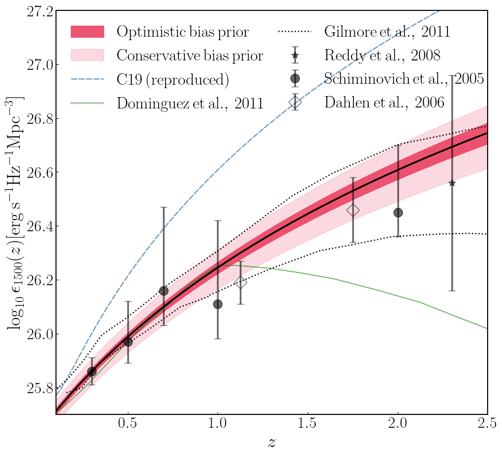
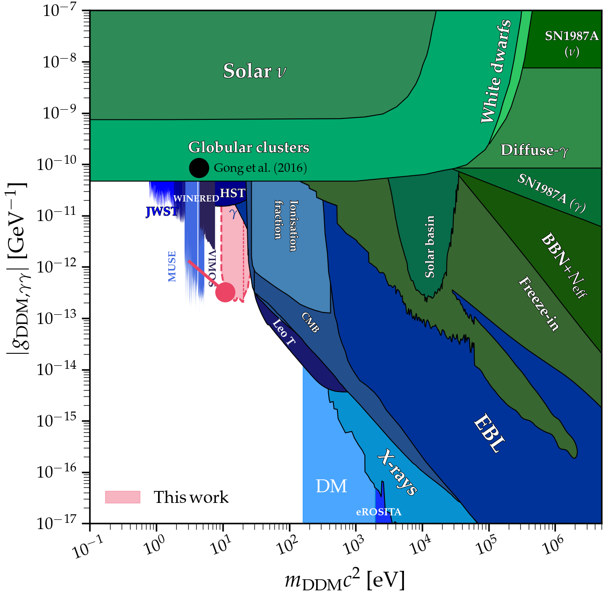
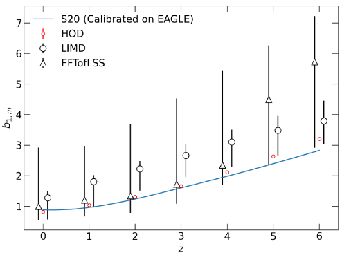
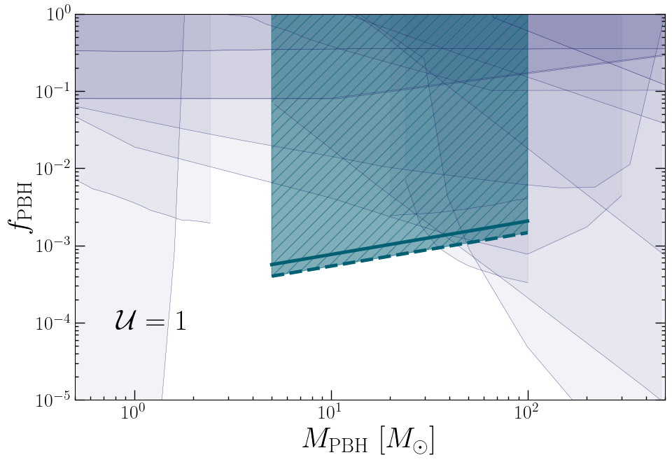

I have always been fascinated by interdisciplinarity and by the possibility of exploring the same topic from multiple perspectives, keeping an open mind and integrating diverse points of view.
This mindset has shaped both my methodology and my way of doing research: to understand deeply how things work, I believe it is crucial to think outside the box, combining tools and expertise from different fields, to address the questions that drive one’s work.
What can we learn from the timeline of cosmic evolution?
Which sources ionized the Universe, and when did this happen?
What is dark matter made of, and how did it shape structure formation?
How can we probe physics beyond the standard cosmological model?
Tackling the Epoch of Reionization
On the top, large-scale structure overdensities correlate with high star formation and strong OIII line emission. The neutral hydrogen fraction shows anticorrelation, due to ionized bubbles. On the bottom, at high z the cold gas in the IGM produces 21-cm absorption, hence in overdense regions it anticorrelates with OIII. As galaxies form and heat the gas, we see a positive correlation, until ionized bubbles turn it back to negative.
How did the Universe evolve from a state filled with neutral hydrogen after recombination to the richly structured cosmos we observe today, with galaxies scattered across vast distances and an intergalactic medium (IGM) that is mostly ionized?
I am particularly fascinated by what I like to call the teenager Universe: the Cosmic Dawn (z < 30) and the Epoch of Reionization (EoR, z ≈ 5-15). During this time, the radiation from the first galaxies altered the properties of the IGM, driving its phase transition.
To study these epochs, we can rely on two types of signals: the 21-cm line emitted by neutral hydrogen in the IGM, and emission lines produced during star formation (e.g., CII, OIII, CO).
Recently, I released oLIMpus, a code that allows the user to model these signals consistently to study auto- and cross-power correlation. The code is fast and scalable, capable of generating 21-cm and line-intensity maps in seconds and
can be found in my GitHub page. Its flexible architecture allows extensions to lower redshifts, beyond-ΛCDM cosmologies, and more complex astrophysical models informed by hydrodynamical simulations or observations. Its low computational cost makes it particularly suitable for exploring wide parameter spaces and performing MCMC analyses.
Cross-correlation studies open new paths to investigate the EoR. One first application is the study of a new boundary condition on its onset, based on the Pearson coefficient between 21-cm and line-intensity maps. This approach provides a robust, model-independent signature of the earliest stages of the EoR, when the very first ionized bubbles began to form.
Line Intensity Mapping
Left: Relative difference in the matter power spectrum between ΛCDM (black) and models with self-interacting neutrinos, parameterized by the coupling Geff (from strong, red, to weak, teal; log10(Geff)=-5 is beyond the reach of CMB experiments). The red dot-dashed curve fixes all cosmological parameters to ΛCDM, while the solid one uses the CMB best fit; the gray line shows the effect of massive standard neutrinos.
Center: halo mass function. Scale-dependent changes in P(k) alter the abundance of halos in different mass ranges. Moderate and weak Geff values impact the halos in the mass range typical during the EoR. These halos host the first galaxies, implying strong sensitivity of the 21-cm signal to these models.
Right: Forecast constraints for HERA (observing 21-cm), CMB Stage 4 and their cross correlation on moderate self-interacting neutrinos. All parameters but the sum of neutrino masses are marginalized over.
Line Intensity Mapping (LIM) surveys target specific observational frequency windows to isolate a certain emission line at a given redshift.
They collect all incoming photons within a specific frequency band and, rather than identifying resolved sources, their observables rely on the statistical analysis of intensity fluctuations across the observed map.
As a result, LIM offers unique advantages: it probes very high redshifts, captures the cumulative emission from faint and otherwise undetectable populations,
indirectly traces matter distribution on small scales (≈ 10 Mpc),
and remains sensitive to a broad range of physical processes.
LIM surveys targeting star-forming lines can be used to probe large-scale structure, and are sensitive to beyond-ΛCDM scenarios. These can be tested using different summary statistics on LIM maps,
for example, the voxel intensity distribution to detect signatures of primordial magnetic fields,
or by cross-correlating LIM maps with other observables,
such as the CMB to test the sum of neutrino masses.
At the same time, the 21-cm signal from the IGM is sensitive to cosmological components; for example,
self-interacting neutrinos, for which LIM can constrain models with weaker coupling strengths than current CMB experiments.
The 21-cm signal is also sensitive to models of enhanched high-z star formation, recently motivated by JWST observations.
ULTRASAT


Left: Forecast constrain on the non-ionizing continuum obtained by cross-correlating the LIM maps of GALEX and ULTRASAT with DESI (pink area). C19 refers to results in the literature based on the cross-correlation of GALEX and SDSS. Other data points and curves show currently available constraints from the literature.
Right: Assuming that decaying dark matter behaves as an axion-like particle, its decay rate depends on the coupling constant. Constraints from the cross-correlation of ULTRASAT and GALEX with DESI (pink area) will probe a particle mass range currently unconstrained.
ULTRASAT is an upcoming near-UV satellite designed to observe transients; its launch is scheduled for 2028.
During the first six months of the mission, ULTRASAT will produce a reference full-sky map in the broadband range between 230 and 290 nm. This map can be analyzed using LIM tools, in analogy with what has been done for GALEX. Cross-correlating this map with galaxy surveys will make it possible to constrain the
UV-optical emissivity. Furthermore, this analysis will be used to test the existence of exotic emission sources, such as
decaying dark matter. In fact, depending on the decay rate of the particle, the associated energy injection contributes to the total signal observed in the reference map, thereby altering its cross-correlation with galaxies.
Gravitational Wave Surveys


Left: Linear clustering bias of astrophysical black hole mergers estimated with MCMC from the EAGLE simulation painted with events (black circles and triangles, using different parameterizations to estimate the power spectrum), from a semi-analytical halo-occupation-distribution model (red circles), and with a fully analytical approach (blue line).
Right: Forecast constraints on PBHs compared with existing limits (shaded light purple). The x-axis shows the PBH mass, while the y-axis shows the fraction of dark matter composed of PBHs. GW surveys alone will be capable of probing the region below the thick, continuous teal line, while their cross-correlation with galaxy surveys will reach the thick, teal dashed lines.
Gravitational Wave (GW) events originating from the mergers of compact objects such as black hole binaries could serve as a novel tracer of large-scale structure. Current GW interferometers (LIGO, Virgo, and KAGRA) detect only a handful of events, insufficient for large-scale statistical studies, but upcoming third-generation observatories like the Einstein Telescope will reach the sensitivity required to build the necessary catalogs.
Since the redshift of the mergers cannot be extracted directly from the GW signal, these events are more naturally traced in luminosity distance space. By modeling observational effects and calibrating the clustering bias of these events from simulations, we can forecast the capability of such surveys to constrain cosmology and astrophysics.
For example, GW surveys can be used to detect signatures of primordial black holes (PBHs), formed in the early Universe rather than from stellar collapse, either through their imprint on the stochastic GW background or via GW cross-correlations with galaxies. The latter provides stringent constraints on the fraction of dark matter that can be composed of PBHs in the mass range comparable to stellar black holes.